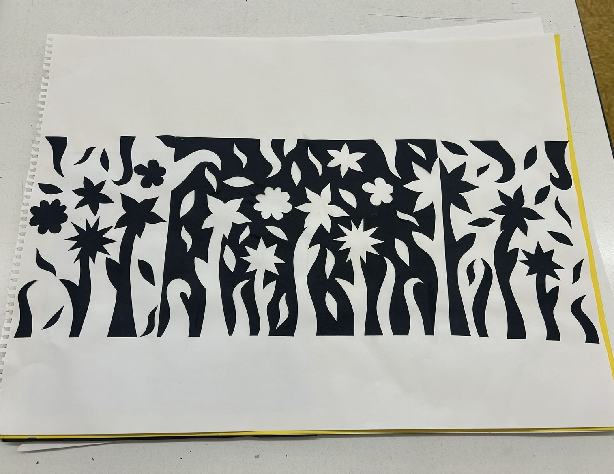

This page is dedicated to my work as a designer and presents a few examples of my work over my years as a student. I have chosen three main important pieces to me that I have picked out to stand out. Each piece has been an important part of my design journey here as a student. This ranges in my creations from projects in the 3D design world and the 2D design world, and importantly much more than that. These pieces have helped me expand my creativity and show what I am capable of as a designer in my own eyes.
Explore how I got some of my inspiration on: Pinterest .
Explore the website for my inspiration for my layout on: Wix.com
Work and image created by me. Doorframe created for 3D Design. Using cardboard to create a visually 3D piece of work and expanding visions. This projected helped me learn the use of expanding my 3D vision and seeing what I can twist and use cardboard for.

Work and image created by me. Wireframed eye created for 3D Design. Using wire to create a visually appealing 3D work of a human body part. This projected helped me see the use beyond wire and the usage of it in the designer world.

Work and image created by me. 2D Design notan project. Using black construction paper and white background paper to optimize the usage of creation and learning beyond designers limits.